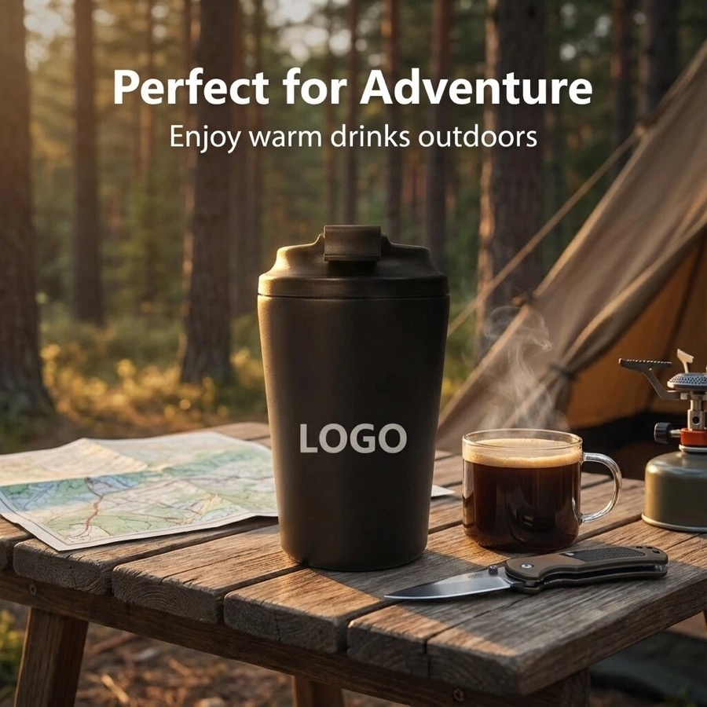
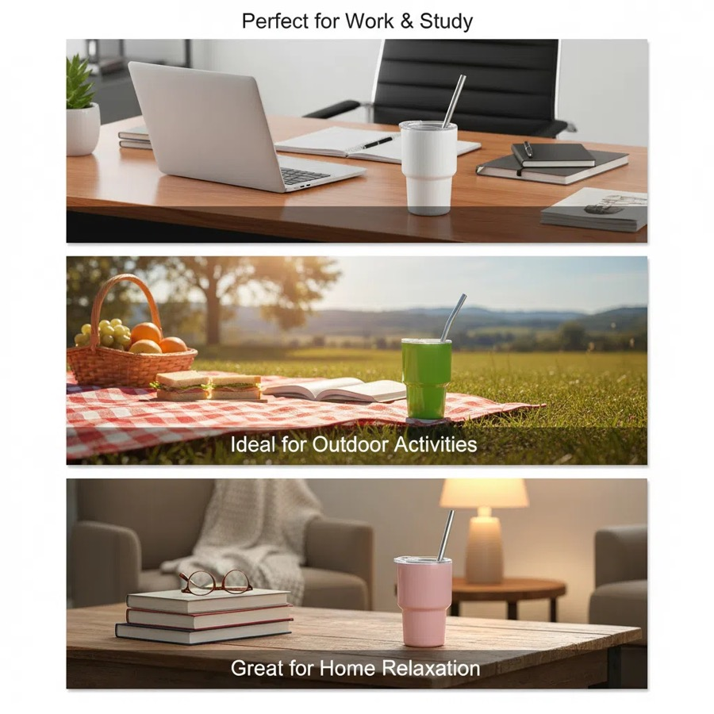

Low MOQ & Sample Support
We support small-batch custom logo orders starting from 200 pcs, offering physical pre-production samples to verify custom color coatings and logo engraving quality before bulk manufacturing.
Custom drinkware sourcing guide
HDS Drinkware is a China-based custom drinkware OEM/ODM sourcing partner for wholesale buyers, distributors, importers and gift companies. This page explains product options, MOQ details, logo methods, packaging choices, sample timing and quote preparation for B2B buyers.



We support small-batch custom logo orders starting from 200 pcs, offering physical pre-production samples to verify custom color coatings and logo engraving quality before bulk manufacturing.
Every order undergoes strict 100% double-wall vacuum testing, handle tension testing, and paint adhesion tests. We handle global customs clearance, offering seamless DDP/DDU delivery to your warehouse.
wholesale tumblers, bottles, sports bottles, coffee mugs and gift sets can be discussed by capacity, color, finish, lid, accessory, packaging and destination market. HDS helps buyers compare practical options instead of pushing a single retail-style SKU.
MOQ starts from 200 pcs for selected custom drinkware projects. The final MOQ depends on material, color, logo method, packaging, sample needs and current supply chain availability.
Material options include stainless steel, plastic and mixed product options. Buyers can share their target market and price range so HDS can recommend a suitable material and product structure.
Logo customization support includes laser engraving, silk screen printing, UV printing, heat transfer, labels and packaging logo placement. The best method depends on product surface, artwork colors and buyer channel.
Stock samples can be arranged when available. Logo samples usually need artwork confirmation. Bulk production is commonly planned around 30-35 days after approval, with DDP/DDU, FOB or EXW shipping coordination discussed by project.
Product comparison
| Option | Best For | Customization Focus | Buyer Notes |
|---|---|---|---|
| Entry test order | New sellers and first projects | Stock color, simple logo, standard packing | Useful when the buyer needs to validate demand with lower inventory pressure. |
| Private label order | wholesale buyers, distributors, importers and gift companies | Logo, color, packaging, barcode and carton marks | Better for buyers who need a repeatable product line. |
| Gift packaging order | Gift companies and corporate buyers | Gift box, insert, card, tote bag and bundle planning | Presentation and sample approval should be confirmed early. |
| Wholesale repeat order | Distributors and wholesale buyers | Stable product, mixed colors, cartons and shipping plan | Best when reorder timing and carton data matter. |
| Method | Best Use | Strength | Notes |
|---|---|---|---|
| Laser engraving | Stainless steel and premium gifts | Durable, clean and professional | Good for corporate and private label positioning. |
| Silk screen printing | Simple logos and larger runs | Clear and cost-effective | Works best with simpler artwork. |
| UV printing | Color logos and detailed artwork | Better visual detail | Sample review is recommended before bulk order. |
| Label or packaging branding | Fast tests and gift sets | Flexible and practical | Useful when buyers want branding without complex setup. |
| Packaging | Best For | Support Details |
|---|---|---|
| Standard box | Samples and wholesale orders | Basic protection and practical carton packing. |
| Color box | Amazon, Shopify and retail channels | Can support barcode, brand information and product presentation. |
| Gift box | Corporate gifts and holiday programs | Can coordinate inserts, cards, sleeves and custom box print. |
| Custom bundle packaging | Gift companies and promotional buyers | Can combine drinkware, cards, tote bags, labels and carton marks. |
Wholesale Drinkware Supplier China with Logo and Packaging Support is suitable for wholesale buyers, distributors, importers and gift companies. Amazon sellers may use low MOQ orders to test color demand and listing response. TikTok Shop sellers may focus on visual product styles and fast samples. Shopify brands often care about private label packaging and repeat order consistency. Gift companies and corporate buyers usually need logo approval, gift box planning and event timing. Distributors need stable product options, carton information and shipping coordination. HDS supports these buyers with sourcing, OEM/ODM customization, packaging coordination and sample support before bulk order.
Quote and sample checklist
Wholesale quotes depend on stable product choice, packing method, carton data and shipping destination.
The standard MOQ for custom laser engraving and custom colors starts from 200 pieces for selected drinkware models. This low threshold is designed to help e-commerce startups, Shopify brands, and event buyers test colors and market demand with minimal upfront inventory risk. For custom packaging boxes or brand-new mold ODM projects, the MOQ may vary from 500 to 1,000 pcs.
Yes. Blank stock color samples can be dispatched within 24 hours. Custom pre-production samples (featuring your laser-engraved or silk-screened logo, custom color coating, and custom packaging box mockup) take 5 to 7 days. Standard sample transit takes 4-6 days via international express (DHL or FedEx).
We support laser engraving (ideal for premium metallic finish), silk-screen printing (highly cost-effective for 1-2 color logos), UV flatbed/3D printing (perfect for full-color, high-detail gradient artwork), and water/heat transfer (best for full-bottle seamless patterns).
Yes. HDS coordinates Delivered Duty Paid (DDP) and Delivered Duty Unpaid (DDU) door-to-door shipping via sea, air, or rail freight. If you do not have an import license, we handle Chinese port export, customs clearance, pay local duties/taxes, and deliver the cargo directly to your warehouse or Amazon FBA center.
This page is written for wholesale buyers, distributors, importers and gift companies who need custom drinkware sourcing, logo customization, packaging support and export coordination from China.
Yes. HDS can discuss OEM/ODM customization by product type, quantity, logo method, packaging requirements and production feasibility.
Distributors drinkware | OEM drinkware supplier | Shipping support | DDP/DDU shipping guide
Send product mix, target quantities, carton requirements, destination and repeat-order expectations so HDS can compare practical wholesale options.